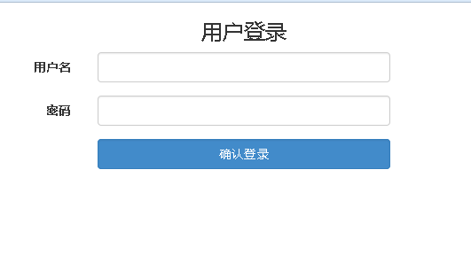

简单使用示例
查看功能介绍
说明：
btFormBuilder.js这个插件的内容也不多，主要是针对HTML中的表单部分基于JQuery和Bootstrap的插件之上，对其表单创建部分进行了一个封装，详细使用方法介绍如下：
假如你的head标签还没有引入外链，先引入.CDNJS 或者 bootcss 提供了 CDN 来支持 btFormBuilder 的 CSS 和 JavaScript 文件链接。
<link rel="stylesheet" href="http://cdn.bootcss.com/bootstrap/3.3.0/css/bootstrap.min.css"> <link rel="stylesheet" href="http://cdn.bootcss.com/bootstrap-fileinput/4.3.4/css/fileinput.min.css" /> <link rel="stylesheet" href="http://cdn.bootcss.com/jquery.bootstrapvalidator/0.5.3/css/bootstrapValidator.min.css" /> <script src="http://cdn.bootcss.com/jquery/3.1.0/jquery.min.js"></script> <script src="http://cdn.bootcss.com/bootstrap/3.3.0/js/bootstrap.min.js"></script> <script src="http://cdn.bootcss.com/bootstrap-fileinput/4.3.4/js/fileinput.min.js"></script> <script src="http://cdn.bootcss.com/bootstrap-fileinput/4.3.4/js/locales/zh.min.js"></script> <script src="http://cdn.bootcss.com/jquery.bootstrapvalidator/0.5.3/js/bootstrapValidator.min.js"></script> <script src="http://cdn.bootcss.com/jquery.bootstrapvalidator/0.5.3/js/language/zh_CN.min.js"></script> --btFormBuilder.js需要下载到本地进行引入--
复制代码
HTML需要做的工作
<div class="col-sm-6 col-sm-offset-2" > <h3> 用户登录 </h3> <form id="fm" action=".../url..." role="form" rank="false" class="form-horizontal" labcol="3" feild="6"> </form> </div>
复制代码
Javascript部分,这一部分使用btformbuilder.js插件中的方法对HTML中的表单进行了创建。
$('#fm').btFormBuilder({ columns:[{ label:'用户名', name:'username', type:'input' },{ label:'密码', name:'pwd', type:'password' },{ show:'确认登录', name:'login', type:'submit' }] })
复制代码
由上边的示例代码可生成如下简单的表单图例

点击查看示例页面
浏览小结:
该插件适合用于做开发用户注册登录界面等,许多跟表单相关的信息模块。主要是很实用。当做某些信息管理系统的时候，好多地方都要用到表单，生写那么多很浪费时间，重复代码很多，使用这个可以自定义表单内容和布局，同时也可以减少很多的代码量，当然在界面展示上看效果也很不错，结合bootstrap官网推出的一些验证插件和全局样式以及UI组件搭配使用，相信更会有魅力所在。